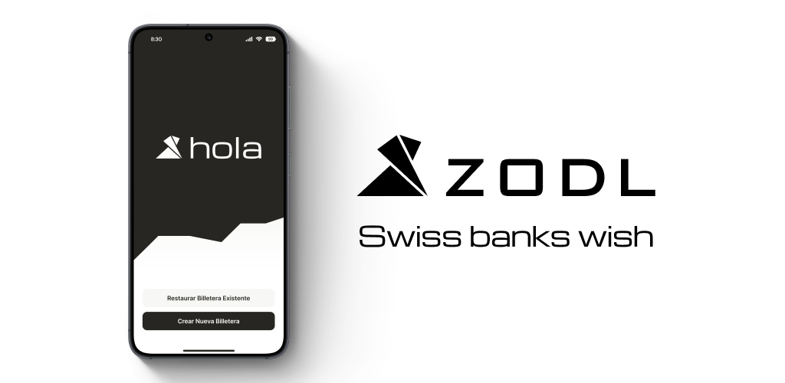

Powered by Zcash, the most private cryptocurrency ever designed, also known as encrypted Bitcoin. With Zodl, you don't need to know how blockchains work to use private money. Zodl hides the complexity while holding the line on security, making it an easy, low-risk way to get started.
Our Why
We envision a world without mass financial surveillance, where law-abiding people can transact freely and privately, without fear that their data will be exploited, sold, or weaponized by criminals, corporations, or governments. A world where financial privacy is the default and access to markets is a human right. Because the ability to make transactions that sustain life and liberty should belong to everyone. There is no sovereignty without privacy.
Built Different
Our wallet feels simple on the surface, but is powered by engineering depth other Zcash wallets simply don't reach. Zodl's engineers are the original creators of Zcash, with a level of cryptography and protocol mastery unmatched by any other wallet team. Paired with the product team that set the standard for Zcash UX, Zodl innovates with a full grasp of the blockchain's requirements, capabilities, potential, and risks.
Open-Source Development
Our work is open source because reliable financial privacy requires transparent development. Anyone can inspect the protocol code, audit the wallet, and verify our work. We don't ask for trust. We show our work.
Privacy by Design
Unlike most apps that claim to prioritize privacy, Zodl is built for it. We go out of our way to know nothing about you. Zodl does not see, collect, or track your wallet activity, balances, transaction history, clicks, or habits. We don't profile.
Self-Custody
Zodl puts you in complete control of your funds: no gatekeepers, no middlemen, just true financial sovereignty. Only you can access and manage your ZEC. Your keys, your crypto.
Add to F-Droid
Tap the button above or manually add in F-Droid → Settings → Repositories → +
https://foss.zodl.com/fdroid/repo
Fingerprint (SHA-256):
7e751ab710159dff44f55631f910ba4033f0ebd2f867691af633cece4ddb62e4
APKs are signed with the same upload key as Google Play — no reinstall needed when switching stores.